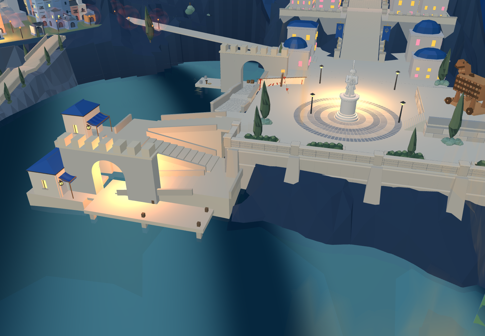
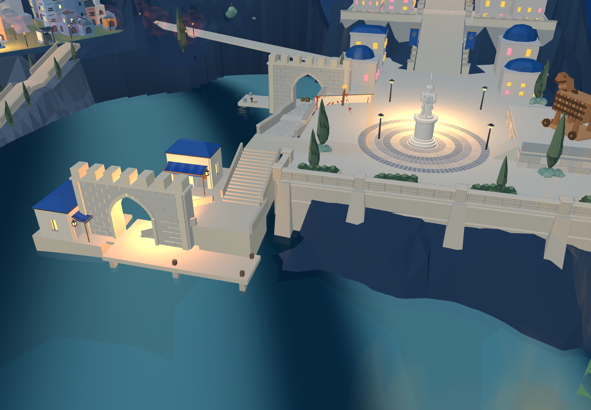
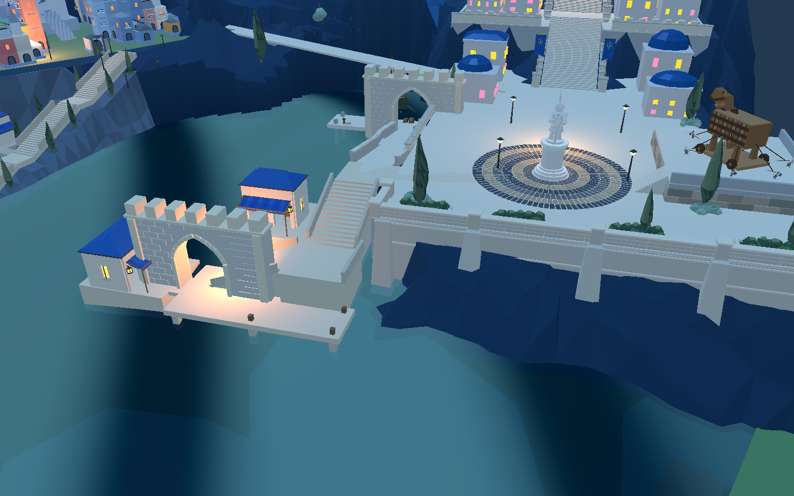

已恢复并接入8931原游戏，同步Godot。原三折改为两段L形阶梯，每段16阶、宽4米；转角宽5.4米，商铺侧院8×7米。原出口柏树与灌木移至广场边缘，避开行走路线。
验证：网页3050个路线采样无阻挡及缺失支撑，楼梯三线96点、广场1406点通过。Godot原短剑兵碰撞控制器从码头到广场到达。未验证整队作战、船舶靠泊及商铺侧院全部边缘。



整体目标仍未完成：侧院边界、台基石砌、商铺停留空间、门洞过亮、主堡比例与港口场景需继续。
认可目标